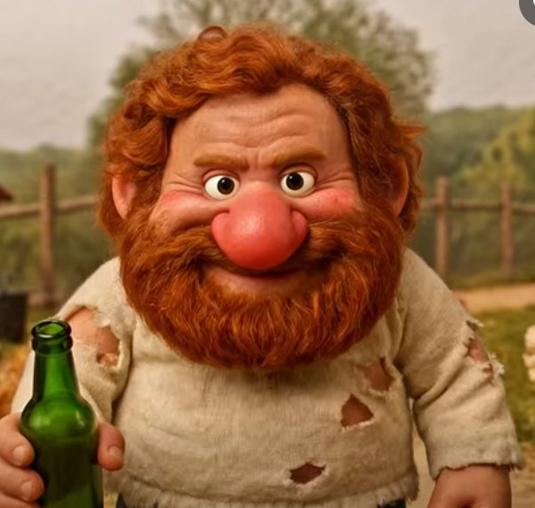

KOMÁNOVICS
Eduárd biciklis kalandja a tanyasi földúton

Hogyan kell játszani?
- Kormányzás: ← → nyilak vagy A / D. Telefonon: tartsd nyomva a képernyő bal vagy jobb felét (vagy kapcsold be a döntést).
- Sör (+10 pont × szorzó): minél részegebb Eduárd, annál több pont jár – de annál jobban imbolyog, és annál később reagál a kormány.
- Kávé sokat, savanyúság kicsit józanít.
- Kecske (álló, átfutó, rohamozó) és traktor: ütközés = egy élet oda. Az árokba se borulj bele!
- Kátyú: ugrat. Pocsolya: megcsúszol. Tyúkcsapat: szétrebben és lelassít.
- 30 másodpercenként gyorsul a tempó. Szünet: P / Esc. Némítás: M.
Toplista
- Betöltés…